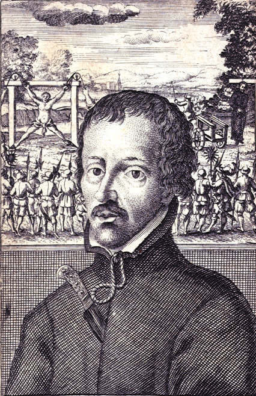

Mučenici iz Engleske i Walesa (10 svetaca)
Svećenik · Pisac · Mučenik
Sv. Edmund Campion
Oxfordski učenjak i nadaren govornik vratio se u Englesku kao katolički svećenik. Tajnu pastoralnu službu pratio je pisanjem, a njegovo djelo Deset razloga dodatno je pojačalo potragu koja je završila mučeništvom.

Izvor slike
- Spomendan
- 1. prosinca
- Zaštitništvo
- Nije navedeno u izvoru
- Djelovanje
- Misije i evangelizacija · Pisanje, znanost i umjetnost · Progoni i progonstvo · Mučeništvo
- Razdoblje
- 16. stoljeće
- Slavi se
- 1. prosinca
Životopis
Na klupama sveučilišne crkve u Oxfordu jednoga su lipanjskog jutra 1581. osvanuli primjerci knjižice na latinskome. Autor je bio Edmund Campion, nekadašnji oxfordski učenjak, tada traženi katolički svećenik. Skrivao se po kućama ljudi koji su se bojali zakona, a ipak su željeli misu i ispovijed. Njegov spis Deset razloga bio je javno, oštro vjersko obrazloženje onoga što je propovijedao potajno. Tiskana riječ dodatno je pojačala potragu za njim. Samo nekoliko mjeseci poslije završio je na londonskome stratištu Tyburn.
Edmund se rodio 24. siječnja 1540. u Londonu. Potjecao je iz obitelji povezane s knjigarskim obrtom i rano pokazao dar za učenje i govor. Školovao se u Christ’s Hospital, a zatim na koledžu St John’s u Oxfordu. Ondje je stekao magisterij i privukao pozornost kao govornik i predavač. Kad je kraljica Elizabeta I. posjetila sveučilište, Campion je sudjelovao u svečanome akademskom programu. Pred njim se otvarala ugledna karijera. U Engleskoj, međutim, crkvena pripadnost nije bila samo osobno pitanje savjesti: vladar je bio vrhovni upravitelj državne Crkve, a od javnih službenika i sveučilištaraca očekivala se poslušnost vjerskom uređenju kraljevstva.
Campion je neko vrijeme prihvaćao taj poredak. Položio je prisegu kraljevske crkvene vlasti i postao đakon Engleske Crkve. U njemu su ipak rasla pitanja o crkvenome jedinstvu i katoličkoj vjeri. Njegov prijelaz nije nastao u jednom dramatičnom trenutku. Napustio je Oxford i boravio u Irskoj, a 1571. otišao u Douai, tadašnje središte obrazovanja engleskih katolika u progonstvu. Ondje se pomirio s Katoličkom Crkvom. Time je prekinuo put koji mu je mogao donijeti sigurnost i društveni ugled u domovini. Nastavio je učiti i poučavati, ali se sve više pripremao za svećeničko služenje onima koji su u Engleskoj živjeli bez slobodnoga pristupa svojoj Crkvi.
Godine 1573. u Rimu je stupio u Družbu Isusovu. Novicijat je prošao u Brnu u Moravskoj, a potom je predavao u Pragu. Ondje je radio sa studentima, pisao i sudjelovao u životu isusovačkoga kolegija. Svećenikom je postao 1578. Njegov intelektualni rad nije prestao kad je obukao redovničko ruho: nastavio je povezivati nauk, propovijed i pisanu riječ. No zemlja iz koje je otišao ostala mu je bliska. Kad su isusovački poglavari 1580. odlučili poslati svećenike u Englesku, među odabranima bio je i Campion.
Engleski katolici tada nisu činili jedinstvenu skupinu pobunjenika. Mnogi su pokušavali živjeti mirno, ali su odbijali napustiti misu, sakramente i zajedništvo s Rimom. Za neodlazak na službu državne Crkve plaćale su se kazne; svećenici školovani u inozemstvu i njihovi pomagači izlagali su se sve oštrijem progonu. Vlasti su strahovale i od stvarnih međunarodnih sukoba: papinske i katoličke sile bile su povezivane s političkim prijetnjama kraljici. U takvu ozračju gotovo svako potajno katoličko djelovanje moglo se tumačiti kao znak nelojalnosti. Campion je, naprotiv, tvrdio da dolazi radi propovijedanja i sakramenata, a ne radi pobune protiv Elizabete.
U lipnju 1580. vratio se u Englesku prerušen u trgovca. Putovao je od jedne katoličke kuće do druge. Slavio je misu, ispovijedao i hrabrio ljude koji su svoju vjeru čuvali u privatnosti. Takav rad tražio je povjerenje: domaćini su ga skrivali, a susjedi i sluge mogli su otkriti gdje boravi. Campion nije bio jedini svećenik te misije; s njim je u Englesku došao isusovac Robert Persons, a oko njih su pomagali laici i druge osobe koje su riskirale vlastitu slobodu. Kratko trajanje Campionova engleskog služenja ne umanjuje njegovu važnost. U nešto više od godine dana postao je prepoznatljiv glas katoličke zajednice koja je nastojala opstati.
Sastavio je izjavu upućenu kraljičinim savjetnicima u kojoj je objasnio duhovnu svrhu svojega dolaska. Budući da se tekst brzo proširio, poznat je pod engleskim nadimkom Campion’s Brag. Njegovo latinsko djelo Decem Rationes, odnosno Deset razloga, branilo je katolički nauk i kritiziralo tadašnje anglikanske stavove. Primjerci su 1581. završili u Oxfordu, na mjestu njegova ranijeg uspjeha. Te knjige nisu bile oružje, ali su u vjerski podijeljenoj zemlji imale snažan javni učinak. Za vlasti su bile još jedan razlog da pronađu čovjeka koji ih je napisao; za katolike znak da njihov svećenik nije odustao od govora ni dok se skrivao.
U srpnju 1581. Campion je otkriven u kući Lyford Grange, nakon što je ondje služio vjernicima. Uhićen je i odveden u londonski Tower. Ispitivali su ga o odnosu prema kraljici i o njegovoj misiji. Priznao je Elizabetu za zakonitu vladaricu, ali se nije odrekao katoličke vjere. U zatvoru je trpio mučenje na rastezaljci. Vlasti su priredile i javne rasprave o vjeri, u kojima je morao odgovarati bez normalne mogućnosti priprave. Njegova učenost, nekoć cijenjena na Oxfordu, sada je stajala pred protivnicima dok je sam bio iscrpljen od zatvora. Sačuvani prikazi tih rasprava nose tragove vjerske polemike, no tijek zatvaranja i mučenja dobro je potvrđen.
Na suđenju je optužen za veleizdaju i za navodnu urotu protiv kraljice. Sud ga je proglasio krivim. Katoličko pamćenje štuje ga kao mučenika jer je ustrajao u svećeničkom i vjerskom poslanju zbog kojega je bio progonjen. To ne znači da treba preskočiti pravni oblik presude: država ga je pogubila pod optužbom za izdaju, a ne pod formalnim nazivom „mučenik”. Upravo razlika između njegova navedenoga cilja i tumačenja vlasti pokazuje koliko su u elizabetinskoj Engleskoj vjera i državna sigurnost bile isprepletene. Campion je mogao sačuvati život prihvaćanjem uvjeta protivnih svojoj savjesti; nije to učinio.
Dana 1. prosinca 1581. odveden je u Tyburn s dvojicom drugih katoličkih svećenika, Ralphom Sherwinom i Alexanderom Briantom. Pogubljeni su okrutnom kaznom predviđenom za veleizdaju: vješanjem, rasporenjem i raščetvorenjem. Campion je imao četrdeset jednu godinu. Njegovi su suvremenici zabilježili molitvu i mirno držanje osuđenih. U katoličkoj je zajednici ostalo sjećanje na svećenika koji je pod prijetnjom smrti nastavio dolaziti ljudima, donositi sakramente i govoriti ono što je smatrao istinom. Njegova se smrt ne može svesti na jedan trenutak hrabrosti; prethodili su joj godine obraćenja, učenja, redovničke stege i skrovite službe.
Papa Lav XIII. proglasio je Campiona blaženim 1886., a papa Pavao VI. svetim 25. listopada 1970., zajedno s drugim mučenicima Engleske i Walesa. Spomendan mu je 1. prosinca. Njegovo ime nose škole i crkve, ali se njegov život najbolje razumije u malim prizorima engleske misije: zatvorena vrata doma u koji svećenik dolazi noću, domaćini koji preuzimaju rizik i misa slavljena bez javne sigurnosti. Bio je izvanredan govornik, a posljednje je godine proveo služeći ljudima kojima je najviše nedostajala mogućnost da svoju vjeru žive otvoreno. Zato njegovo svjedočanstvo nije samo priča o raspravi dviju Crkava. Govori o savjesti, vjernosti i cijeni koju su ljudi tada plaćali za zajedništvo u vjeri.
Pročitaj više na izvornoj stranici ↗